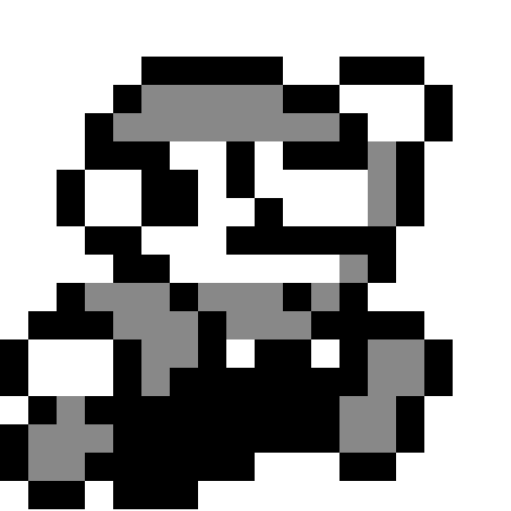

New Super Mario Bros. U Deluxe
Имя Марио встречается в названиях игр для Nintendo Switch так часто, что при выходе очередной невольно хочется закатить глаза и возмутиться: ну сколько можно эксплуатировать несчастного героя?! Однако усатый водопроводчик за долгие годы освоил столько новых профессий, что в его компании скучно никогда не бывает. Он и на машинах гонять мастак, и в теннис с гольфом отлично играет, и вечеринки устраивает первоклассные.
Даже платформеры с Марио разительно отличаются друг от друга. Если Super Mario Odyssey была великолепным трёхмерным приключением с уймой разных механик, то новенькая New Super Mario Bros. U Deluxe — двумерная классика, вызывающая ностальгию по играм восьмидесятых годов.
Впрочем, называть её новинкой будет не совсем корректно. Это дополненный порт New Super Mario Bros. U, вышедшей в конце 2012 года на Wii U. Правда, в Deluxe-издании есть пара сюрпризов даже для тех, кто прошёл оригинал вдоль и поперёк. А уж те, кто играл в «Марио» с детства, но пропустил именно эту часть, точно будут в восторге. Ведь что может быть лучше сочетания проверенного годами геймплея, новых сложных уровней и современной картинки?
Разобраться в New Super Mario Bros. U Deluxe смогут не только поклонники серии, но и те, кто в видеоигры-то никогда не играл. Ведь это самый что ни на есть классический двухмерный платформер: прыгай через пропасти, побеждай монстров и собирай разные полезные предметы. Красный гриб сделает героя выше и даст защиту от одного удара, цветы позволят стрелять огнём или льдом, костюм тануки (или белки-летяги, как его называют в западных версиях проекта) — парить по воздуху, пингвина — плавать в воде, а ещё есть звёздочки, луны, монетки… Кто играл хоть в какой-нибудь платформер, уже знает, как это работает. А кто не играл — всё поймёт за считанные минуты.
The Legend of Zelda: Link’s Awakening
Начало 1990-х, Япония. Программист компании Nintendo Морита Кадзуаки настолько вдохновлен возможностями новой портативной консоли Game Boy, что буквально берет работу на дом и в свободное время разрабатывает собственную игру на основе The Legend of Zelda: A Link to the Past, недавно вышедшей на SNES. Вскоре о задумке Кадзуаки узнают другие коллеги и с удовольствием присоединяются к любительскому проекту. Результаты впечатляют руководство Nintendo, и безымянная «песочница» сначала получает статус порта A Link to the Past, а потом и вовсе обзаводится собственным сценарием, концепцией и названием.
Так в 1993 на Game Boy выходит The Legend of Zelda: Link’s Awakening, первая игра серии, ломающая её шаблоны и правила. В новом приключении нет Зельды, спасения Хайрула и трифорса, зато есть выверенная система квестов и подземелий, интригующий сюжет, новые механики и инвентарь. По этой игре можно учиться начинающим геймдизайнерам — в ней всё сбалансировано практически идеально. The Legend of Zelda: Link’s Awakening суждено стать бабушкой для множества игр последующих десятилетий, ее будут цитировать и копировать. В 1998 Nintendo переиздает игру в цвете для Game Boy Color, а в 2011 портирует на Nintendo 3DS. Казалось бы, Link’s Awakening заслужила свое место в истории и учебниках геймдева, она может спокойно почивать на лаврах. Но тут наступает 2019 год, и на Nintendo Switch выходит ремейк.
«Зачем?» — этот вопрос возник даже у преданных фанатов, игравших в оригинал на момент релиза в 1993-м. Один из очевидных ответов — хотя бы затем, чтобы новое поколение, не способное оценить версию для Game Boy из-за ретро-графики, могло прикоснуться к этой истории. The Legend of Zelda: Link’s Awakening выделяется даже на фоне современных частей серии: её сюжет вдохновлен сериалом «Твин Пикс», он сюрреалистичнее и мрачнее, чем может показаться на первый взгляд. К тому же Link’s Awakening всегда стояла особняком в линейке Zelda-игр, ее очень просто воспринимать как самостоятельное произведение.
Даже огромное количество пересечений с другими играми Nintendo выглядит органично: во-первых, создатели намеренно использовали модели из других игр ещё на ранних стадиях разработки, а во-вторых сны на то и есть сны, чтобы быть странными. Гостей из других игр здесь немало — например, цветы-пираньи и гумбы из Mario, монстры из Kirby и принц Ричард из игры Kaeru no Tame ni Kane wa Naru, выпускавшейся Nintendo только для японского рынка.